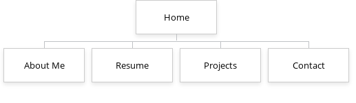

Aiden_Valentine_ResumePage
Justice Keistler
10/14/2024
Requirements and Design Document
Project Overview:
I will be creating a website for a friend and student at UNCC. The goal for this website is to give my client a resume website that they can show to future employers or to have a professional hub with all of their information. The content of the website will have a index page, an about page, projects page, resume page, and a Contact my page
- Name: Aiden Valentine
- Location: University of North Carolina at Charlotte
- Email: avalen13@charlotte.edu
Site Map:
Page Design: Home
- Name of Page: Home
- Purpose of the page: To provide a welcoming intro and give visitors a quick overview of how the rest of the site looks and guides them to view other sections
- Audience/Users of page:Potential Employers, Recruiters, Clients, Peers, and Career Advisors
- What will be the content of the page?
- Brief introduction
- Navigation menu
Page Design: About Me
- Name of the page: About
- Purpose of the page:To give a more personal, in-depth view of who my client is, including your background, skills, what drives my client and allow visitors to connect with you on a personal level.
- Audience/Users of page: Potential Employers, Recruiters, Clients, Peers, and Career Advisors
- What will be the content of the page?
- Personal Introduction
- Skills and Expertise
- Personal Interests
Page Design: Resume
- Name of the page: Resume
- Purpose of the page:To display my clients professional qualifications, work history, and skill in a structured format. It will serve as an online version of their resume.
- Audience/Users of page: Potential Employers, Recruiters, Clients, Peers, and Career Advisors
- What will be the content of the page?
- Professional Experience: list of work experience in chronological order, including job titles, company names, dates of employment.
- Education: educational background
- Skills: list of technical skills, soft skills, and any additional qualifications.
Page Design: Contact
- Name of Page: Contact
- Purpose of the page: To provide an easy way for potential employers, collaborators, or clients to get in touch with my client.
- Audience/Users of page:Potential Employers, Recruiters, Clients, Peers, and Career Advisors
- What will be the content of the page?
- Contact information : Email, phone
- Social Media links : LInkedIn, GitHub
- Location: City / State
Page Design: Projects
- Name of Page: Projects
- Purpose of the page: To showcase my client’s work and accomplishments, providing tangible examples of what they’ve done. Allows visitors to see their abilities in action through project descriptions and links.
- Audience/Users of page:Potential Employers, Recruiters, Clients, Peers, and Career Advisors
- What will be the content of the page?
- Project portfolio: showcase notable projects
- Possible case studies
- links and photos
Dynamic Functionality: Photo Gallery
I found an interesting interactive photo gallery with a lightbox feature and will add it to the “Projects” page. Users will be able to click through project screenshots to view them in a larger, centered model, with navigation buttons to cycle through images. This allows users to explore my clients projects without leaving the page.
Similar but not the same to Charlotte.edu/research page where its almost a slide show.